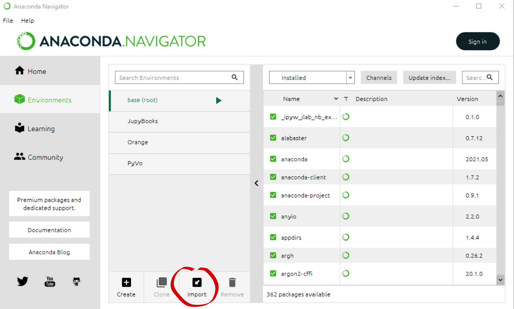
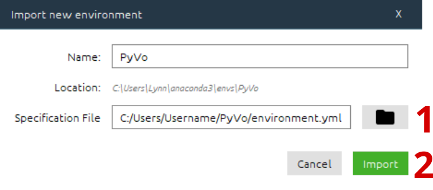
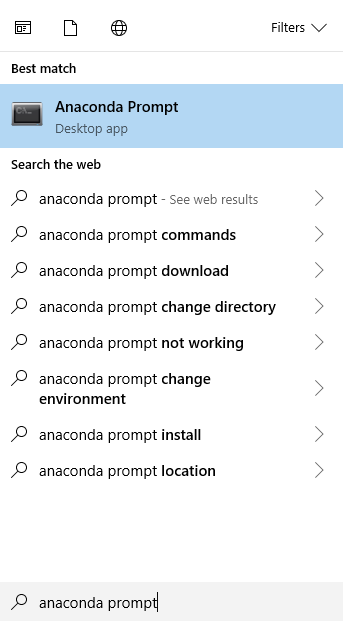
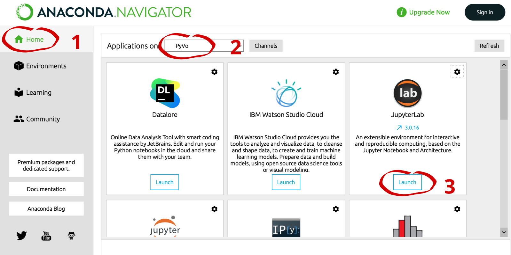

Installation¶
Für die Verwendung der PyVo Notebooks aus der Vorlesung bzw. dem Seminar muss der Packetmanager Anaconda installiert werden. Dieser sorgt dafür, dass alle benötigten Bibliotheken einfach in einem definiertem Ecosystem installiert werden.
Anaconda¶
Anaconda kann auf folgender Webseite heruntergeladen werden:
https://www.anaconda.com/products/individual
Installieren Sie Anaconda nach folgender Anleitung:
PyVo Projekt herunterladen¶
Laden Sie den Programmcode von PyVo von folgender GitHub Seite herunter bzw. clonen Sie das Repository:
https://github.com/BoernerLab/PyVo
Navigieren Sie anschließend in den heruntergeladenen Ordner, falls Sie mit der Commandozeile arbeiten.
Erstellen des PyVo Environment¶
Für die Vorlesung werden wir ein Environment erstellen, in dem die Aufgaben bearbeitet werden können. Dort werden alle Pakete installiert, die wir verwenden werden. Das Erstellen des PyVo Environments ist auf verschiedene Arten möglich:
Öffnen Sie den Anaconda Navigator über die Suchleiste. Falls dieser nicht automatisch intalliert wurde, intallieren Sie diesen zusätlich.
Navigieren Sie zu den Environments.

Klicken Sie nun unten auf Import 
Klicken Sie auf 1 und wählen Sie die Datei environment.yml aus dem heruntergeladenen PyVo Ordner aus. Mit dem Klick auf 2 wird das Environment angelegt. 
Um nun die Installierten Pakete auch im Jupyter Lab verwenden zu können, öffnen Sie Anaconda Prompt über die Suchleiste.
Kopieren Sie anschließend die folgenden Befehle und führen Sie diese mit Enter aus.
conda activate PyVo
python -m ipykernel install --user --name=PyVo
7. Navigieren Sie nun auf Home (1) und wählen Sie unter 2 PyVo aus. Dadurch wird das Environment aktiviert.
Im Anschluss können Sie JupyterLab unter 3 öffnen. Dabei öffnet sich Ihr Browser.

Öffnen das Anaconda Prompt über die Suchleiste, navigieren Sie zum PyVo Ordner und führen Sie folgenden Befehl aus:
Hinweis: Sie können die Ordner wechseln mit dem Befehl cd. Beispiel: cd \User\Name\Desktop\PyVo
conda env create -f environment.yml
Aktivieren Sie im Anschluss das Environment und setzen Sie ihr Environment als Jupyter Kernel mit:
conda activate PyVo
python -m ipykernel install --user --name=PyVo
Tippen Sie nun den Befehl jupyter-lab in das Terminal um Jupyter-Lab zu öffnen.
Öffnen Sie das Terminal und navigieren Sie zum PyVo Ordner und führen Sie folgenden Befehl aus:
Hinweis: Sie können die Ordner wechseln mit dem Befehl cd. Beispiel: cd \User\Name\Desktop\PyVo
conda env create -f environment.yml
Aktivieren Sie im Anschluss das Environment und setzen Sie ihr Environment als Jupyter Kernel mit:
conda env create -f environment.yml
python -m ipykernel install --user --name=PyVo
Tippen Sie nun den Befehl jupyter-lab in das Terminal um Jupyter-Lab zu öffnen.